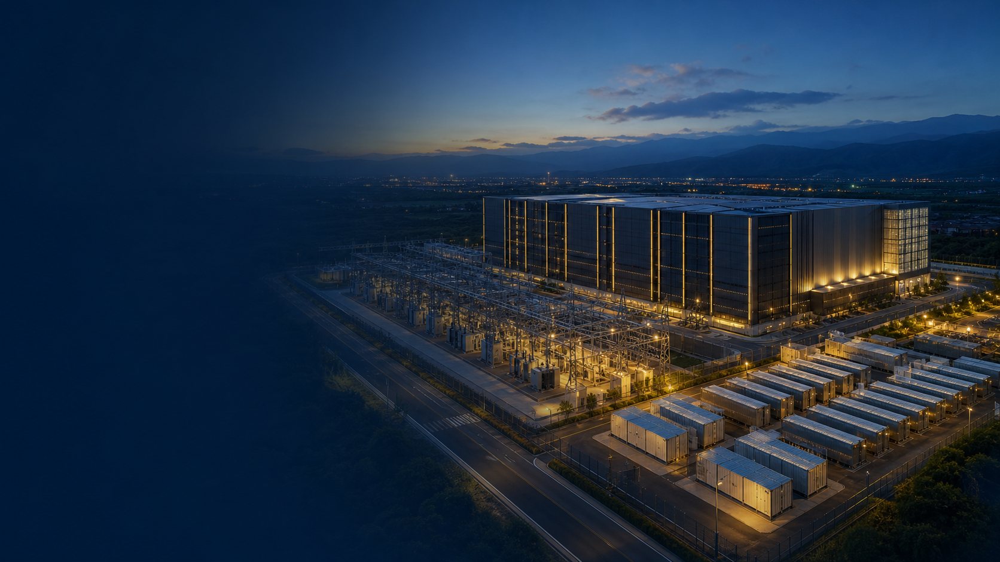
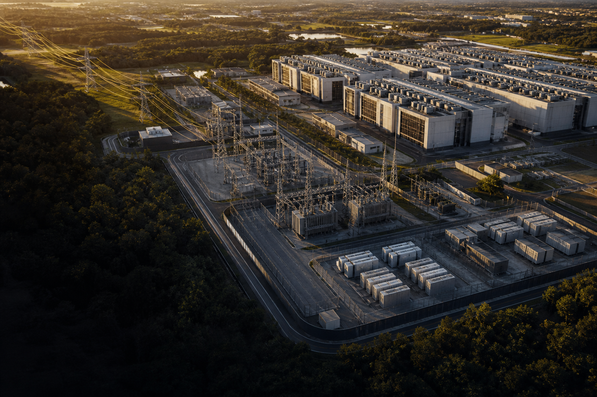

需求端
全球 AI 算力供不應求，訓練與推論工作負載持續上升。

AIDC POWER INFRASTRUCTURE / 01
進能服以「灰區電力平台」連接土地、電網與算力交付，讓投資者把電力時程轉化為可被驗證的資產價值。
01 / INVESTMENT THESIS
那一段，是投資方與土地擁有者能先行卡位的「灰區」：介於公用電網與白區 IT 機房之間、最影響交付時程的電力基礎設施。

WHY NOW / WHY US
| 投資判斷 | 原網站觀點 | 進能服的切入 |
|---|---|---|
| 時程 | 貨櫃約 6 個月；變壓器與併網可能長達 2.5 年 | 提前完成灰區規劃、並網與備援設計 |
| 位置 | 白區 IT 設備高度標準化，灰區則受場址與電力條件限制 | 以土地、電力與工程交付形成進入門檻 |
| 價值 | 負載先到位者，可優先取得算力客戶與營收時程 | 把電力可用性轉成可談判的資產條件 |
02 / MARKET SIGNAL
需求、供給與政策同時推動 AIDC；但受限於區位、輸電與核准流程，電力已成為台灣場域型算力投資的首要篩選條件。
全球 AI 算力供不應求，訓練與推論工作負載持續上升。
業者爭相在台布局，資料中心的可交付電力成為差異。
主權 AI 與算力建設被納入國家政策，資本入口正在打開。
TAIWAN POWER REALITY
| 觀察維度 | 原網站保留數據／訊號 | 對土地與投資的意義 |
|---|---|---|
| 區域集中 | 約四分之三資料中心位於北部 | 優先檢視北部場址的電源、饋線與變電站條件 |
| 核准落差 | 核准 3,033 MW；實際送電 303.5 MW | 取得核准不等於能在預定日交付電力 |
| 用電審查 | 桃園以北大型用電審查以靠近電廠、自建電源與儲能為導向 | 灰區方案要在選址初期即納入，而非後補 |
| 供給回應 | 燃氣新增 26 GW 為長期供給回應之一 | 短期橋接與長期電網方案須並行評估 |
台灣不是「有沒有電」的二元問題；真正問題是，在你的場址、你的時程、你的負載曲線下，能否交付足夠且合規的電。
03 / POLICY LEVER
促參與投資抵減可改善資本效率，但不能取代可行性、契約、稅務與電力交付的完整查證。
原網站指出：促參法有七種民間參與方式，若為自備私有土地，BOO 是主要對應模式；但真正的投資判斷仍須回到可行性、稅盾可使用性與電力交付。
| 議題 | 保留的原網站結論 | 決策提醒 |
|---|---|---|
| 民參模式 | 七種模式中，BOO 對自備私有土地有直接關聯 | 由法律與財稅顧問確認個案適用性 |
| 優惠量級 | 50 億投資的抵減量級可觀，但非所有優惠均能併用 | 以 SPV、出資主體與稅額建立敏感度模型 |
| 資格／評選 | 取得資格不等於完成建置；可行性評估不可輕忽 | 把電力、土地與工程證據前置到投資備忘錄 |
04 / THE GREY-ZONE PLATFORM
我們不販售 GPU，也不只做單一設備。進能服整合從中壓受電、儲能、備援、綠電到電力調度的灰區能力，讓 AIDC 的白區能夠可靠運作。
PLATFORM MODULES
| 灰區模組 | 解決的問題 | 進能服角色 |
|---|---|---|
| 中壓受電與變電 | 饋線、變壓器與併網時程是關鍵瓶頸 | 容量規劃、工程整合與投資可行性 |
| BESS 儲能緩衝 | AI 負載快速擺盪，且需要削峰與備援協調 | 功率設計、調度策略與資產整合 |
| 分散式／橋接電源 | 在電網容量到位前降低交付空窗 | 備援、橋接、運轉邊界與合規設計 |
| 綠電與能源管理 | 用電大戶責任與客戶低碳要求同步增加 | 能源組合、監控與長期成本優化 |
05 / BUSINESS MODEL
進能服協助投資者與土地擁有者先選擇所站的位置，再決定資本投入、風險承擔與收益來源。
以區位、面積與電力可行性，取得長約租賃或開發合作的談判權。
進能服整合受電、儲能、備援與能源資產，為 AIDC 交付條件背書。
以機電、機房與交付能力，承接白區與整體設施的建置營運。
購買或租用可用容量，將 AI 工作負載落在可營運的基礎設施上。
| 收入層 | 可能內容 | 核心風險／驗收點 |
|---|---|---|
| 第一層：土地 | 租金、地上權或開發合作 | 區位、地目、環評與可取得的電力容量 |
| 第二層：電力基礎設施 | 受電、儲能、備援與能源服務 | 交付時程、可靠度、CAPEX 與運轉邊界 |
| 第三層：資料中心設施 | 機房、機電、冷卻與代管相關收入 | 客戶信用、PUE、工程分工與 SLA |
| 第四層：算力 | GPU／雲端容量服務 | 高技術與市場風險；非進能服的核心定位 |
投資前先回答六個數字：可用 MW、併網日、總 CAPEX、每度電成本、目標租金／費率、保底合約年期。
06–07 / APPENDIX
貨櫃型算力與燃氣發電機是可納入方案的工具；但投資判斷仍必須回到場址、電網、氣源、運轉時數、工程責任與全生命週期成本。
APPENDIX 01
預製化可縮短 IT 與模組化機房的交付，但不能縮短變壓器、併網與在地工程的時程。
| 可加速 | IT 模組、現場組裝、分期擴建 |
|---|---|
| 仍須驗證 | 氣候條件、PUE、用水、合規與白灰區接口 |
APPENDIX 02
成熟的快速部署能力可作備援或橋接；若走長時數 IPP，必須另行檢核法規、氣源與燃料成本。
| 適合評估 | 黑啟動、備援、橋接電力與短時數韌性 |
|---|---|
| 決策關卡 | 720 小時運轉線、氣源、排放與資產負債表 |